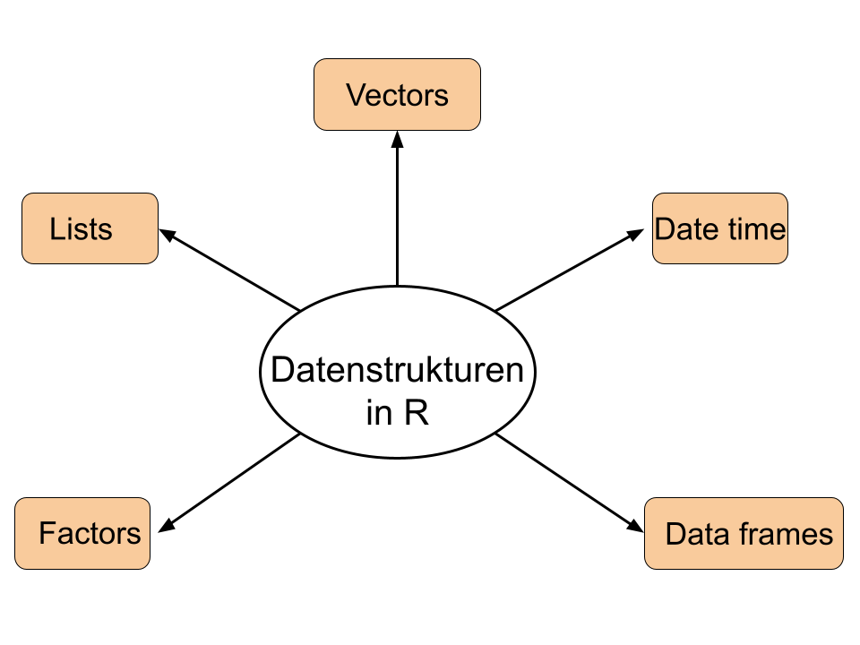
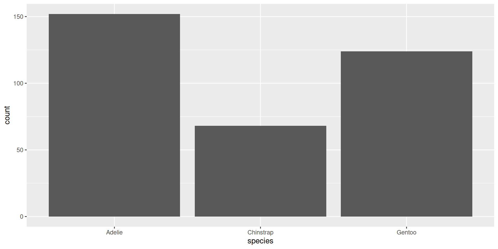
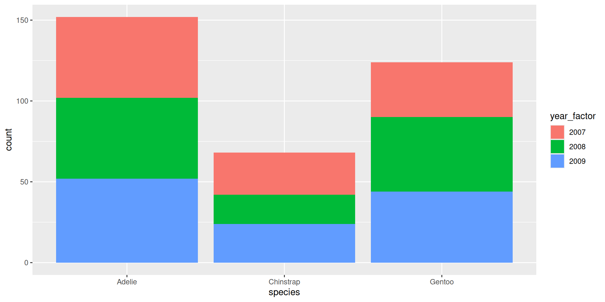
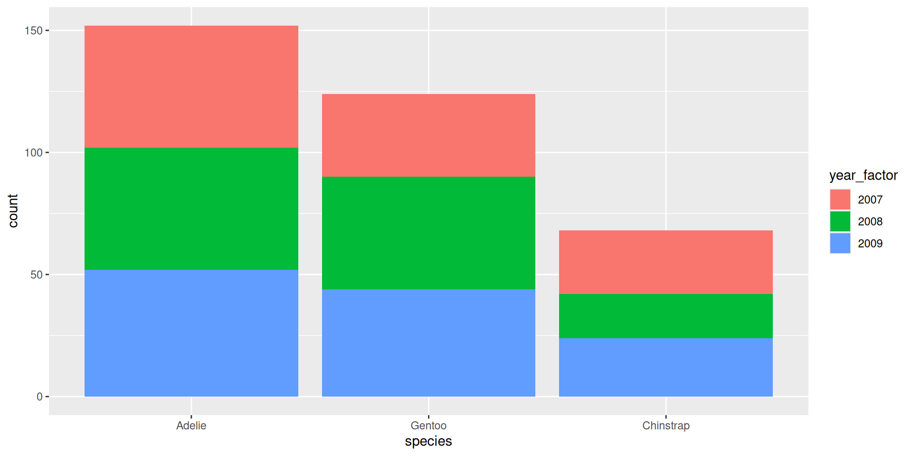
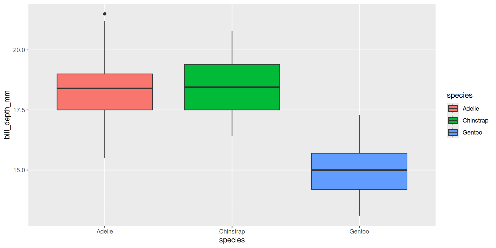
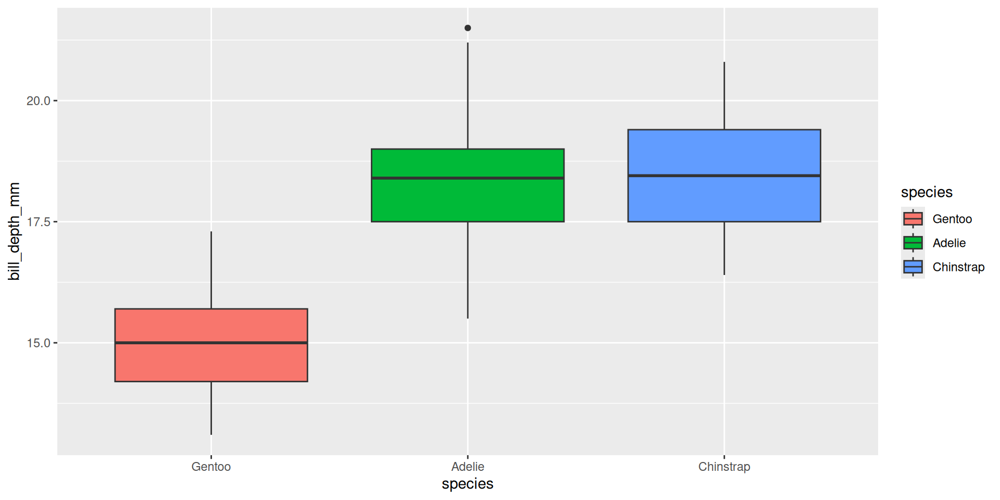

Daten rekodieren
Unit 5
Ziele für heute
- Datentypen und -klassen in einem Datensatz identifizieren und deren Bedeutung erklären
- Spalten basierend auf Bedingungen umkodieren
-
Kategorien in Daten mit
{forcats}umkodieren und sortieren
Datentypen
Warum sollten wir uns für Datentypen interessieren?
Beispiel
| name | number_of_cats | handedness |
|---|---|---|
| Bernice Warren | 0 | left |
| Woodrow Stone | 0 | left |
| Willie Bass | 1 | left |
| Tyrone Estrada | 3 | left |
| Alex Daniels | 3 | left |
| Jane Bates | 2 | left |
| Latoya Simpson | 1 | left |
| Darin Woods | 1 | left |
| Agnes Cobb | 0 | left |
| Tabitha Grant | 0 | left |
| Perry Cross | 0 | left |
| Wanda Silva | 0 | left |
| Alicia Sims | 1 | left |
| Emily Logan | 3 | right |
| Woodrow Elliott | 3 | right |
| Brent Copeland | 2 | right |
| Pedro Carlson | 1 | right |
| Patsy Luna | 1 | right |
| Brett Robbins | 0 | right |
| Oliver George | 0 | right |
| Calvin Perry | 1 | right |
| Lora Gutierrez | 1 | right |
| Charlotte Sparks | 0 | right |
| Earl Mack | 0 | right |
| Leslie Wade | 4 | right |
| Santiago Barker | 0 | right |
| Jose Bell | 0 | right |
| Lynda Smith | 0 | right |
| Bradford Marshall | 0 | right |
| Irving Miller | 0 | right |
| Caroline Simpson | 0 | right |
| Frances Welch | 0 | right |
| Melba Jenkins | 0 | right |
| Veronica Morales | 0 | right |
| Juanita Cunningham | 0 | right |
| Maurice Howard | 0 | right |
| Teri Pierce | 0 | right |
| Phil Franklin | 0 | right |
| Jan Zimmerman | 0 | right |
| Leslie Price | 0 | right |
| Bessie Patterson | 0 | right |
| Ethel Wolfe | 0 | right |
| Naomi Wright | 1 | right |
| Sadie Frank | 3 | right |
| Lonnie Cannon | 3 | right |
| Tony Garcia | 2 | right |
| Darla Newton | 1 | right |
| Ginger Clark | 1.5 - honestly I think one of my cats is half human | right |
| Lionel Campbell | 0 | right |
| Florence Klein | 0 | right |
| Harriet Leonard | 1 | right |
| Terrence Harrington | 0 | right |
| Travis Garner | 1 | right |
| Doug Bass | three | right |
| Pat Norris | 1 | right |
| Dawn Young | 1 | ambidextrous |
| Shari Alvarez | 1 | ambidextrous |
| Tamara Robinson | 0 | ambidextrous |
| Megan Morgan | 0 | ambidextrous |
| Kara Obrien | 2 | ambidextrous |
Durschnittliche Anzahl
Warum funktioniert es nicht?!
Warum funktioniert es immer noch nicht?!
Einatmen… und sich die Daten Anschauen
Welchen Typ hat die Variable number_of_cats?
Noch Einmal einen Blick darauf Werfen
Manchmal musst Du auf deine Befragten aufpassen
Immer Datentypen Respektieren!
Jetzt, wo wir wissen, was wir tun…
Moral der Geschichte
- Wenn sich Deine Daten nicht so verhalten, wie du es erwartest, könnte ein type coercion beim Einlesen der Daten die Ursache sein.
- Gehe hinein, untersuche deine Daten, wende den Fix an, speichere deine Daten und lebe glücklich bis ans Ende deiner Tage.
Datentypen in R
Atomic vectors
logical: TRUE, FALSE
character: “Hallo”, “a”, “TRUE”
integer: 2L, 34L, 0L
double: 1, 2.4, pi
Datentypen in R
typeof() → wie R das Objekt speichert
Expliziter vs. Impliziter Typenzwang
Explicit coercion
as.logical(),as.numeric(),as.integer(),as.double(),as.character().Implicit coercion z. B. R konvertiert Variablen gemischter Typen in einen einzelnen Typ.
… und das ist nicht immer eine gute Sache!
Praktikum: Type Coercion
Welcher Typ sind die angegebenenen Vektoren?
Daten-Rekodierung
if_else(), case_when()
TRUE/FALSE: if_else()
Schnabellänge kategorisieren: “überdurchschnittlich”, “unterdurchschnittlich”
TRUE/FALSE: if_else()
if_else(stimmt_das, das_passiert, sonst_das_passiert)
TRUE/FALSE: if_else()
if_else(stimmt_das, das_passiert, sonst_das_passiert, NA_so_behandeln)
Mehrere Bedingungen: case_when()
Schnabellänge kategorisieren: short, medium, long
Mehrere Bedingungen: case_when()
Praktikum: Daten rekodieren
Break ☕ 🍵 🍜
10:00
Datenstrukturen
Datenstrukturen

class() → wie sich das Objekt verhält
Factors
\(\rightarrow\) Kategoriale Variablen: Character + Ganzzahl
Dates
Ganzezahl = Anzahl Tage seit Ursprung
Lists
Generische Vektorcontainers: Vektoren jeglicher Typ und Länge
Data Frames
Spezielle Liste mit Vektoren gleicher Länge
Mit Factors Arbeiten: {forcats}
Daten
Rows: 344
Columns: 8
$ species <fct> Adelie, Adelie, Adelie, Adelie, Adelie, Adelie, Adel…
$ island <fct> Torgersen, Torgersen, Torgersen, Torgersen, Torgerse…
$ bill_length_mm <dbl> 39.1, 39.5, 40.3, NA, 36.7, 39.3, 38.9, 39.2, 34.1, …
$ bill_depth_mm <dbl> 18.7, 17.4, 18.0, NA, 19.3, 20.6, 17.8, 19.6, 18.1, …
$ flipper_length_mm <int> 181, 186, 195, NA, 193, 190, 181, 195, 193, 190, 186…
$ body_mass_g <int> 3750, 3800, 3250, NA, 3450, 3650, 3625, 4675, 3475, …
$ sex <fct> male, female, female, NA, female, male, female, male…
$ year <int> 2007, 2007, 2007, 2007, 2007, 2007, 2007, 2007, 2007…Warning: The following aesthetics were dropped during statistical transformation: fill.
ℹ This can happen when ggplot fails to infer the correct grouping structure in
the data.
ℹ Did you forget to specify a `group` aesthetic or to convert a numerical
variable into a factor?





Praktikum: {forcats}
20:00
Break ☕ 🍵 🍜
10:00
Praktikum: if_else(), case_when(), {forcats}
prak-05d-cond-mutate-forcats.qmd
30:00
Danke! 🌔
Slides created via revealjs and Quarto.
Access slides as PDF.
All material is licensed under Creative Commons Attribution Share Alike 4.0 International.

rstatsBL - Data Science mit R